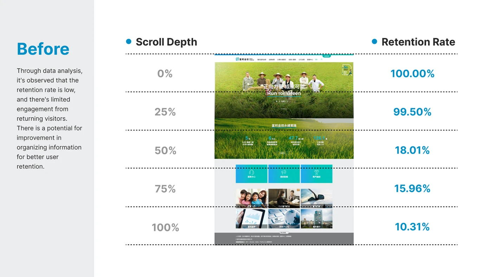
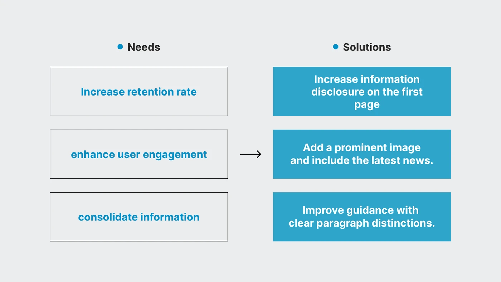
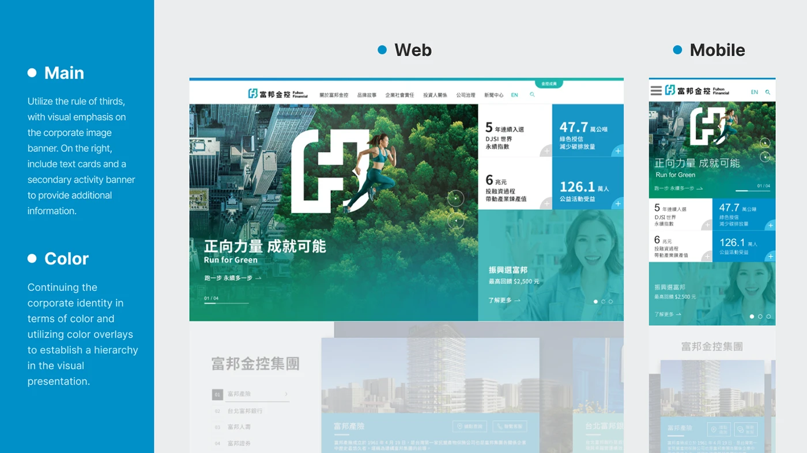
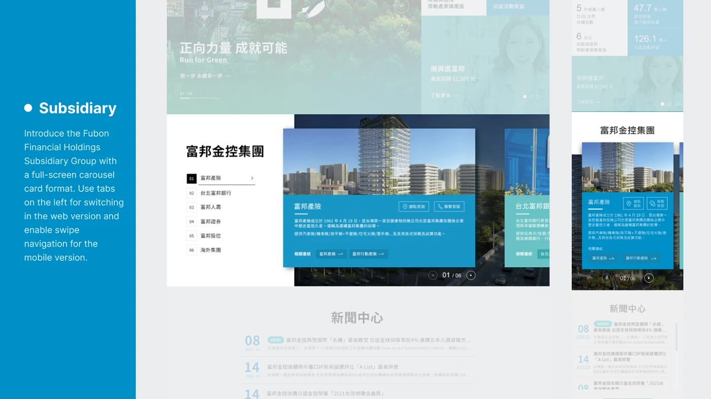
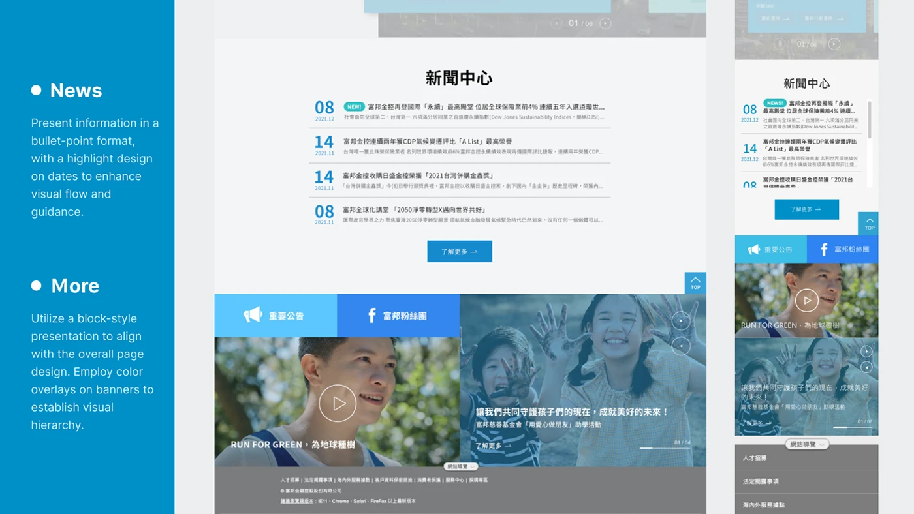
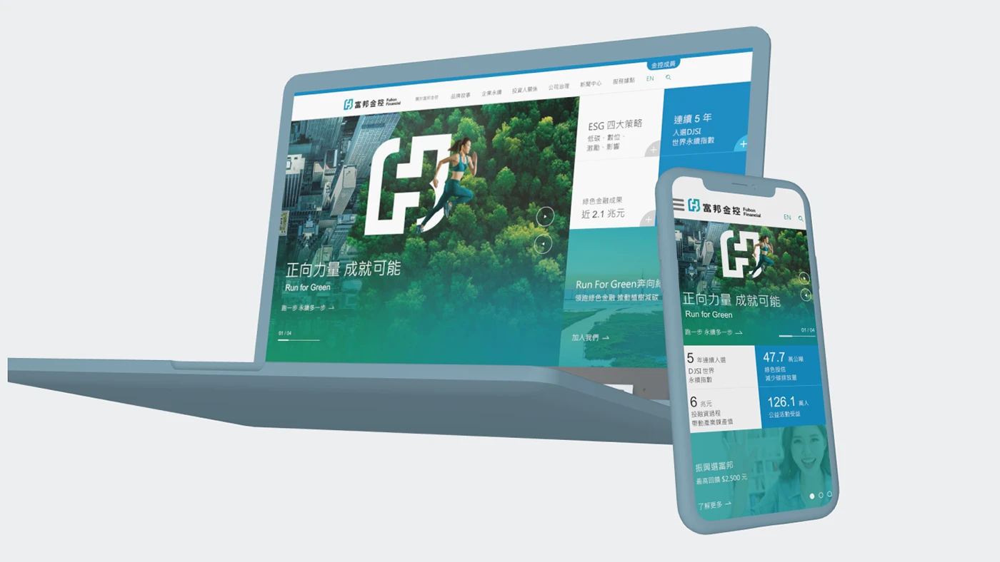

Case Study — 02
Homepage redesign for one of Taiwan's largest financial groups — balancing corporate credibility with engagement through clearer visual hierarchy and information architecture.
01 — Challenge
A financial group's homepage has to do two things at once: convey institutional trust, and keep visitors engaged long enough to find what they need. The existing homepage leaned heavily on the former — dense information blocks and a static layout meant users often left before reaching key products or brand stories.



02 — Approach
I anchored the identity in rectangular geometry and dark tones to convey stability and sophistication, then layered in visual rhythm — full-bleed imagery, clear entry points, and integrated data highlights — so the page feels dynamic without sacrificing the credibility a financial brand depends on.


